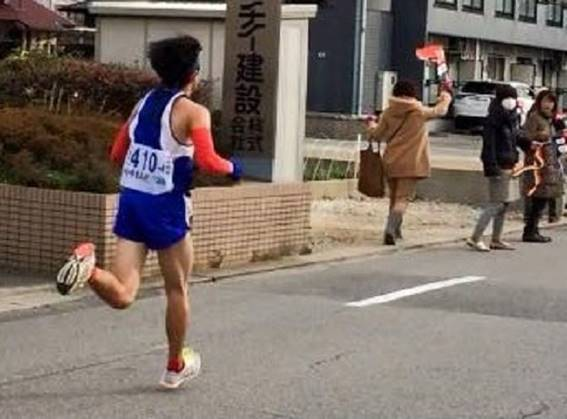
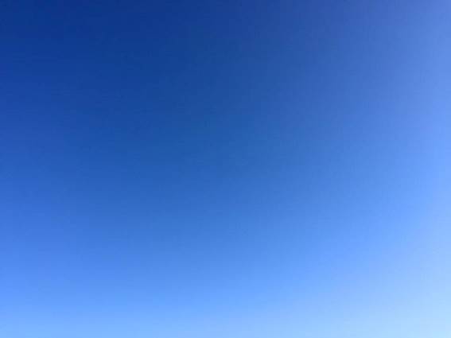
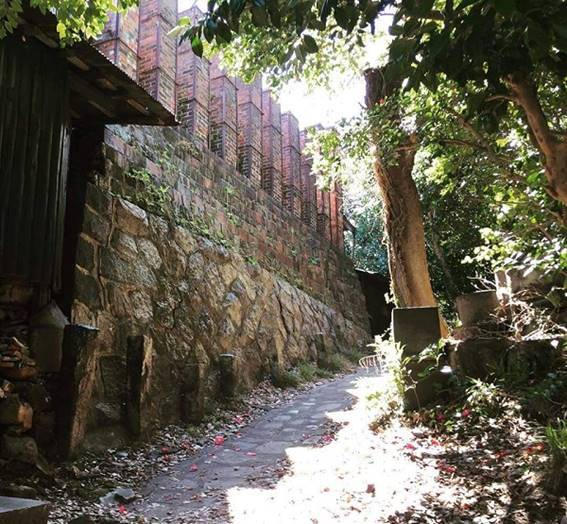

| あなたの背中 あの人の背中: 7つのショートストーリー | |
| 秋月 悠志 | |
| AKIDUKIYUJI (2017) | |
あなたの背中 あの人の背中
秋月 悠志
目次
もういいよね、がんばらなくても。もう疲れちゃった。
可愛がられるのは、要領のいい人ばっかり。
一生懸命にがんばっても、何一つ報われない。まじめに考えて、真剣にやっているのに。良かれと思って言ったのに。
私なんて生意気な女としか思われない。不器用な自分が、ほんと嫌になった。
海が見えるビルということで評判の、新しいオフィスだった。素敵なオフィスでいいねと、大学時代の友だちからも言われた。
でも、働いているときに、窓から見える海は、いつでも現実逃避を促してくる。大きく広がる海の向こうに沈んでいく夕陽を見ていると、その海の向こうに逃げ出したいと思った。逃げ出したからといってそこに素敵な暮らしが待っているとも思えない。
もしも一生の幸せ量が決まっているなら、私の幸せはここじゃないどこかに、まとまって落ちていると思う。もうかなり大きな幸せが貯まっているのに、きっと誰にも見つけてもらえないようなところに落ちているのよ。
このままでいいの？探しに行かなくていいの？ここにいても仕方ないじゃん。
今夜、オフィスの灯りに照らされた夜の海は、冷たく強い風が吹き、激しく波立っていた。その荒れた海を見ていると、さらに気持ちが凹んでいく。
視線を部屋の中に戻すと、窓に背を向けた部長席に視線がふと止まった。机の裏側、座った時に膝が当たりそうな場所に、写真があることに気付いた。マグネットが付いたクリップに写真が挟まれて貼ってある。
何の写真だろう？
いつも堅物で通っている部長が、こっそり机の裏側に貼ってある写真に興味が湧いた。
もうみんな退社してしまって誰もいないのをいいことに、私は手を伸ばしてマグネットごとその写真を手に取り、部長席の横に立って眺めた。
砂漠のように広い砂浜に二人の女性が背中を向けて座っていた。日本でイメージする砂浜とは全く違う。砂の色と粒子の細かさが、高精細な写真から伝わってくる。
広い砂浜の先には、さらに広く穏やかな海が微かに写っている。一見火傷しそうな熱さをイメージしたが、座っている二人の背中からは、心地よさそうにしている空気しか伝わってこない。
ひとりは30 歳前後に思える。もう１人は小学生位だろうか。仲のいい親子なのかな？いったい誰なんだろう？
そう思ったとき、誰かがオフィスに入ってくる気配を感じた。慌てて部長席から少し離れたが、あまりに咄嗟のことで、写真は手に持ったままになってしまった。
「あれ、まだ残ってたの？」
私は焦った。
よりによってオフィスに帰ってきたのは、今日は出張したまま戻って来ないはずの部長だった。勝手に机の下から写真を取り外して見ていることを、どう説明しようかと考えたが、全く浮かんでこない。弁解のしようがない。
部長の視線が、私の手元に向いた。
「それな、いい写真だろ」
穏やかな声で話し掛けられた。てっきり叱られるかと思った私は、意外に感じた。
「落ちてたか？」
私は何も答えられない。部長の意図が分からず、どう答えるべきか考えあぐねた。
「いいよ、別に何も怒ったりしないからさ」
その言葉を聞いて、私はようやく恐る恐る部長の方を向くと、部長はもう私の方を向いていなかった。
何も答えられずにいる私になのか、独り言なのか分からないような雰囲気で、部長は呟くように話し始めた。
「可愛かったんだよなあ。もう20 数年前のことなんだけどね。忘れられないんだよ」
部長は微動だに出来ずたたずむ私の目の前を通って窓際の自分の席へ進み、つい数分前の私と同じように、窓の外を眺めながら 、振り返らずに話を続けた。
「その写真な、一人娘と女房なんだ」
私は、部長の背中を見ながら、その言葉に耳を傾ける。
「家族三人でさ、オーストラリアに行ったんだ」
「......... 」
「でもな、俺はその頃、自信を失っていてな。とにかく仕事が巧く行かなくてさ、帰国しても辛いだけだなあって、旅行の間中、ずっとそんなことを思ってた」
「......... 」
「でもな、この二人の後ろ姿を見ていたら、俺がへこたれてる場合じゃないなって、思った。俺を信じて生きている二人を悲しませるわけにいかないなあってさ」
「......... 」
「それで、もう一度がんばろうって思ったんだよ。俺ってさ、がんばってもがんばっても全然報われなかった。適当なことばかり言っている同期が先に評価されてさ、俺は何にも評価されやしなかった。自分の考えを持たずに、力のありそうな先輩や上司の言うことに頷いてばかりのやつが、先に評価されていくんだ。悔しかったよ。」
「......... 」
「もう、会社を辞めようって何度も思った。でもな、浜辺に座っているふたりの背中を見たら、もう少しがんばってみようって思えた。その時の写真なんだ」
私は、目から涙が溢れそうになり、俯いた。
あまりにも今の私にかぶることが多い。
涙は頬を伝わらずに、そのまま床に落ちた。部長の方を向かなくても、部長の背中がふっと緩んだのを感じた。
「実は、その一人娘な、先週、結婚したんだ」
「え、そうなんですか」
思わず私はそう反応した。涙声になっていなかっただろうか、と恥ずかしさが胸に広がる。
「うん。会社の誰にも言ってないけどね」
部長は、静かに続けた。
「結婚式ってさ、最後に親への挨拶があるだろ」
「はい」
「その挨拶でさ、娘が言うんだよ。
『子どもの頃に、家族で旅行したオーストラリアの海辺で、その大きな海を眺めていたときに、母が私に言ってくれました。幸せな風景や幸せな時間は、当たり前じゃないんだよ。必ず、がんばってくれている人がいるお陰なんだよって。でも、その時の私には、何のことだか良く分かりませんでした』って」
部長は、そこで呼吸を整えるように、間をあけた。
弱っていた時の部長のことを、何も言わなくても奥様は分かっていらしたんだな。部長はそれで救われたんだなと、私は思った。
「うちの女房も、良いこと言ってくれてたんだなあって思ったよ。俺のことをそう言ってくれていたんなら、もうそれで十分だと思ったんだ。でもな、娘は予想もしてなかった言葉を続けたんだ」
部長はまた、一呼吸あけてから、話を続けた。
「『でも、ある時分かったんです。それは私が深夜に目を覚ましたときのことです。キッチンのテーブルについて父は、独りでお酒を飲んでいました。そして、どうも泣いていたように思ったんです。それは、いつも堂々としていた父の、初めて見る背中でした』
って、そんな話を、ほら、結婚式で泣きながら話すんだよ。まいっちゃうよね」
「はい。いい娘さんですね。泣けちゃいます」
私はもう涙を隠さなくてもいいと思った。その途端にちょっと涙声になってしまった。
「娘もな、泣いて言葉を詰まらせながら言うんだよ。
『戦ってるんだなあって、思いました。ああ、この人のお陰で、私は今まで生きてこられたんだって。
オーストラリアで母に言われたことを急に思い出したんです。そして、ふと、その時の写真があったことを思い出したんです。
皆さん、見てください。私の大好きな写真です。
私と母しか写っていません。でも、これを撮った父の愛が見えると思いませんか？』ってな」
私は、自分の頬を涙が流れていることに気付いた。
いつしか、再び顔を上げて、部長の背中を見つめていた。
「俺はなあ、その時に、それまでの人生の全てを認めて貰った気がしたよ」
そういうと、部長はゆっくりと振り向いて、真っ直ぐに私の方を見た。
「あなたも、毎日辛いよな。でも、俺は見てるよ。ホント、がんばってくれてる」
そう言って、部長がゆっくりと頷いてくれた。
「ありがとな」
昼間、見せたことのない優しい表情だった。視界の先が溢れ出る涙でぼやける。眼をギュッと閉じで涙を絞り出して目を開けると、部長がゆっくりと頷いてくれている。
私は、すーっと、体が軽くなるのを感じた。
堅物と言われている部長の、素敵な表情だった。
日頃、家庭のことなんて何も感じさせない部長なのに、守るべき家族を持つ優しい父親としての、初めて知った部長の一面だった。家族のことを語っていた部長の背中は、きっと忘れられないと思った。
そして、なんだかまた、私もがんばれそうな気がした。
今朝、旅立っていった親父は、最後まで自分を見舞ってくれる人たちに、自分の作り上げた和菓子「天使の吐息」を振る舞っていた。
見舞いに来てくれる方々は、みんな知っていた。親父が和菓子職人だったことを。そしてこのお菓子が親父の一番自慢のお菓子であることを。
病院での手続きを済ませて、僕は親父が3 か月に亘ってお世話になった病院の談話室で、その和菓子を前にし、僕が子どもだった頃を思い出していた。
-----
親父が持ち帰った和菓子がお皿に載せられて、僕の前に差し出された。
「今度はどうだ？」
僕が一口頬張った途端に、訊いてくる。
不安を抑えていつもの威厳を保とうとしていることが、その表情から伝わってくる。
その親父の真剣な気持ちがわかるから、僕も緊張する。神経を口の中に集中させて、和菓子を味わう。
しかし、こんな僕の評価でいいのか？と思う。大人ほど色々な物を食べているわけではないし、そもそも親父と同じ食卓で育っているんだから、味覚の好みも親父と同じなんじゃないかと思う。
これまでも、試食して不味いなんて思ったことは無かった。でもいつも僕は、
「うーん、まあ、いいんじゃないの」
という答え方をした。
やはり世の中の全員が満足できる味なんてないと思っていたし、僕の判断が最終責任を背負うことになるのが嫌だった。
ただ、親父が僕に試食してくれと頼んでくれることは、一人前に扱われていると思える数少ない機会だった。だから嬉しかった。親父が真剣に僕の言葉に耳を傾けてくれる。そのことが嬉しかった。
僕が「まあ、いいんじゃないの」と評価すると、親父も少しホッとするのが分かる。
そして、そんな親父が僕に言ったことがある。
「食べ物はな、生きていく上で絶対に欠かせないよな。だけど、和菓子なんて食べなくても生きていける。それも本当のことだ。
でもなヒロ、勉強だけで生きていけるか？テレビも漫画もなくて、毎日楽しいか？
みんなリラックスしたいんだ。ホッとしたいんだ。
俺は、そんな一瞬をたくさんの人に与えたいんだ。和菓子には、その力がある。俺が心を込めて研究し、心を込めて作れば、きっと人を幸せにする力を宿せると思ってるんだ。
生きていくのは甘くない。だからな、俺のお菓子で、ちょうど良い甘さと安らぎを与えたいんだ。
お前も、人を幸せにするために生きろよな」
と。
その話を聞いたのは、僕が中学生になったばかりか、小学六年生くらいだったと思う。その頃はふうんとしか思っていなかった。
-----
親父は、美味しそうに和菓子を味わってくれる人の姿を見るのが大好きだった。それは、自分を見舞ってくれる人たちに対しても同じだった。
見舞客が持ってきてくれたお菓子を一口いただいてから、「うーん、美味しいですねえ」と話したら、続けてお客さんに「天使の吐息」を勧めた。自分が作り上げたお菓子をベッド脇の棚から取り出して、見舞客に渡すのだ。そのために在庫がなくなると、僕に駅の売店まで買いに行かせる。
そして、そのお菓子を口にした後の表情を、じっと待っている。笑顔で話しているけれど、その表情の奥には、職人の目が戻ってくる。
僕はその表情を見るのが大好きだった。誇らしげに、でもどこかでやっぱり不安げに見つめていたその姿が、僕は好きだった。
「美味しいですねえ」
と言って貰って、初めて肩から力が抜けるのも、息子の僕には分かった。自信はあるのに、でも最後まで油断できないぞって、見つめていた。
そして、讃辞をいただくと、僕の方をちらっと見て、ほんの微かに目だけで頷いてくれた。その瞬間は、僕が子どもの頃に試食していた時とは違う、丸くなった親父の表情だった。
一度もその時のことについて聞いたことはないが、「ほらな、俺とお前で作り込んだ味だからな」っていう気持ちが伝わってきた。親父と二人だけの、心の繋がりだった。
一週間前、親父にとって最後になる讃辞を送ったのは、僕の息子だった。
「ジイジのお菓子はおいしいね」
と、言って目を細めて笑う孫を見る親父の表情は、幸せそうだった。親父は、病気のせいで出にくくなってきた声を絞り出すように、「ありがとうね」と言っていた。
息子は、これまでに何度も「天使の吐息」を食べたことがある。
そして食べる度に、「おいしいねえ」と口にする。親父もそれを知っていた。それでも、孫がお菓子を口に運ぶときには、職人の目になるのだ。
どんなときも、自分のお菓子が誰かの口に入るとき、一瞬だが職人の目に戻る。
そして、「おいしいねえ」を聞くと、ホッとするんだ。
そんな親父を思い出し、もうあの親父の目を見られないと思うだけで、視界がぼやけてしまう。
今なら分かる。
僕が子どもの頃、お菓子の評価のために、他人の味覚まで意識する必要はなかったと。最愛の息子が美味しいと言えば、それで良かったのだと。孫が喜ぶ顔を見て微笑んでいる親父を見ていると、あの頃の親父も息子の笑顔が見たかっただけに違いないと。親父は、そのために働いていたんだろうなと。
もちろん、真剣にお菓子の研究を重ねていたからこそ、僕も美味しいと思えるお菓子になった。そして、親父の真剣な心意気が伝わってきたからこそ、いつまでも親父を尊敬出来たんだと思う。
小さな和菓子メーカーに勤めていた親父だけど、物凄くたくさんの人に幸せを与えたんだろうなあと思う。
自分が親父になって思う。
高校時代に一度は越えたつもりになった親父の背中が、再び大きく感じられる。
僕の背中を、息子はどんな風に見ているだろうか。これからどんな背中を見せていけばいいんだろう。
親父、ありがとう。
眼を閉じたまま、全ての味覚を集中させるように、「天使の吐息」を口に運ぶ。その親父のお菓子に、ちょっと塩っ気が加わってしまった。
頬を涙が伝わっていく。
「ほんと、最高に美味しいよ」
目を閉じたまま、空へ向かう親父に、心の中で声を掛けた。
誇りをもって生きていこう。僕は親父の目を忘れない。親父の大きな背中を忘れない。
背中が遠ざかっていく。
遠ざかって行くのに、小さくならない。そんな息子の背中を見ながら、胸が熱くなっていく。
目の前の背中に追いつけない。
いつの間に、こんなに成長していたんだろう。ついこの間まで、手を抜いてあげなければ、勝負にもならなかったのに。
-----
今だってまだまだ、追い抜かれたつもりはない。この家を支えているのは俺だという自負もある。
まだまだ俺が支えてあげなくてはいけないと思う。
でも、予想外に成長している息子に気付かされた。前を走る背中の逞しさが、嬉しくてたまらない。
俺自身、親父を越えられたのか？まだなのか？と、我が身を振り返る。
もちろん、親父に負けないだけ頑張ってきたという自負もある。ただ、親父の全ては越えられない。
職人としての親父は、いつまで経っても越えられないし、越えようと思ってもいない。比較するものじゃない。親父が残した数々の建物には、親父の人生が詰まっている。
「暑い時も寒い時も、そこに住む人の幸せを祈りながら、釘を打ってきた」と、晩年語ってくれた。「俺にとっては何百と建ててきた家の一つだとしても、そこに住む人にとっては生涯をかけて手にする大切な家だからな」と。
身体が疲れている時、調子が悪い時、ふっと魔が差すような時もあったそうだ。切った木が数ミリずれていたり、ほんの僅か割れそうな気配がしていることに気付いたりしても、気付かなかったことにしたくなる時があったという。実際に、そのまま作業を続けたこともあったそうだが、どうしてもその妥協を許せなくて、数日後にその作業をやり直したそうだ。「結局、一度も手を抜いたまま建てた家はない。最初から全力でやればよかったんだがな。それが職人の誇りだよ」と、苦笑いしながら語ってくれた。
親父が建てた家には、親父の生きざまが詰まっている。息子として分かる親父の心がそこにある。一緒に散歩していて「お前が小学6 年生の時、小学校最後の運動会を見に行けなかっただろう。あの時に建てていたのが、この家だよ。台風がたくさん来た年でなあ。工期が遅れていたんだ。悪かったな。リレーの選手としてアンカーを走るんだと喜んでいたお前の勇姿を、俺も見たかったよ」と話してくれたことがある。
つい最近、そこに住んでいる家族が、楽しそうに外出から戻ってくる姿を目にしたとき、その幸せの一端を、親父が担っていたんだと思い、胸の奥が熱くなるような、ムズ痒いような気持ちになったの思い出した。
俺にとって、親父は大きかった。
高校時代に、背丈は親父を越えたけれど、お袋が亡くなるまで、背丈以外に何も勝てたと思えたことがなかった。同じ土俵にいないからというだけでなく、やっぱり親父は親父だと思う。
しかしお袋が亡くなった途端に、親父は小さくなった。
背が丸くなった。下を向いている時間が増えたと思う。
老いたなと感じる瞬間が増えた。
長年連れ添ってきたお袋が病で急逝した後、すっかり元気をなくしてしまった。いつもあんなに強気だった親父から、魂が抜け出てしまったように感じられた。
-----
翻って、俺の背中は、息子から見てどうなんだろう。そう思い始めた矢先だった。
街のマラソン大会に申し込もうと書き込んでいた俺の書類を覗き込んで、俺も出たいと言い出した。高校の陸上部として活躍しているのは知っていたが、今は幅跳びの選手だ。一緒に走るなんて、もう何年も経験していない。
若いころから長距離に自信があった俺は、「いいぞ、いいぞ、競争だ！」と、息子と一緒に10 キロのレースに申し込んだ。
腕相撲をしても、相撲をしても、かけっこをしても、手を抜かなければ勝負にもならなかった息子が、反抗期を終えて戻ってきたら、大きくなっていた。
口もきかない時期がしばらく続いていたが、久々に話しかけてきて横に並んだ息子の肩は、俺の肩より高い位置にあった。
それでもまだまだ負けちゃいけない。そう思いながら、一緒にマラソン大会にエントリーしたのだった。
-----
いやあ、もっと悔しいと思っていた。もっと納得できないと思っていた。もっと寂しいかもしれないと思っていた。
でも、違っていた。親父を越えた息子を誇らしく思い、きっと息子以上にそのことを嬉しがっている俺がいた。
遠近感すらくつがえす、遠ざかっていく息子の背中を、忘れたくないと思う。遠ざかりながら小さくなるはずの息子の背中が大きく見える。
小学生の頃、げほげほと咳ばかりして、冬には鼻水を垂れっぱなしだったあの息子が、大きなストライドで颯爽と駆けていったその後ろ姿に、あの頃の面影はなかった。元気なときにも甘えて、だだをこねて地面に寝転がったあの子は、こんなに速く走れるようになった。生意気なことばかり言って、俺を困らせていた息子は、こんなに健康に育ってくれた。
きっと息子も、俺の全てを抜き去ったとは思っていないだろう。自慢になるが、あいつは謙虚で優しいやつだ。俺も気づいていない俺の何かを、あいつは見てくれているに違いない。
俺に似ているから、可愛い。
俺に似ているから、憎たらしい。
それでもやっぱり、可愛い息子なんだ。
-----
「父ちゃんに、やっと1 つ勝てたわ」
「そうだな。でももうこれからは、何だってお前が勝てるようになるさ」
「そんなことない。父ちゃんには敵わないことだらけだ。ギター弾かせたらプロみたいだし、絵も上手いし、文章もかける。じいちゃん譲りかも知れないけど、手先は器用だし、日曜大工も上手ければ、料理もうまい。仕事だって、丁寧にきっちりやるって、こないだ会社の同僚の人が話してくれてたよね。ほんとすげえなって思う」
「そんなに誉めたってなんもやらんぞ」
「何よりもな、こんな俺が父ちゃんと一緒に走ろうって、素直に思えたことが、俺はすごいと思ってるよ。それって、父ちゃんのお陰なんだよ。俺はいつか、自分の息子とこんなふうにやっていけるんだろうか。そんなことを思っちゃうよ。まだまだ越えられそうにないなって」
ゴール地点で待ってくれていた息子が、ロッカールームへと並んで向かいながら、話してくれた。
「お前、本気でそんなこと思ってんのかよ！」
俺は立ち止まって、息子に聞こえないような声で呟いた。
「何か言った？」
立ち止まって振り返った息子の笑顔に、幼い頃の面影が見えたとき、何故か視界がぼやけたことは、内緒にしておこう。

「花火ってさ、蚊がいない季節にやりたいんだよな」
彼が言った。
ワガママなことを言うなあってボヤキながら、私は季節外れの花火をネットで探した。
そして今夜、彼と付き合いはじめてちょうど1 年になる記念日に、この防波堤の上で線香花火をしようって約束した。
でも彼はいない。
1 年前、雨が降っていたあの日、防波堤の上に立った2 人は、傘の下で初めて唇を重ねた。それが遠い遠い昔に思える。
今夜もきっと一緒に海を眺めながら、仲良く笑いながら線香花火をして、そのあとまた何度もキスすると信じていたのに。
私の勘違いで、彼は私に背を向けた。
なんであんなことを口にしたんだろう。悔やまれてならない。でももう、あの言葉も、そして彼も戻っては来ない。
1 週間前に約束した時間は、さっき過ぎた。やはり彼は来なかった。僅かな期待を抱いていたが、もろくも崩れ去った。彼は遅刻しない人だった。時間に来ないということは、もう現れないってこと。
防波堤に小さな波がぶつかる。同じ防波堤の遠くの方で夜釣りをしている人が、海に向かって釣竿を垂らしている。
水平線の彼方に、フェリーらしき大型客船がゆっくりと進んでいるのが見えた。
「ねえ、『格好いいね！』って言われて、ニタニタ笑ってたでしょう」
なぜ彼のことを疑ったんだろう。
彼は、詠美にそう言われて、確かに笑っていた。でも、そのタイミングで現れた私が、その前の話を一言も聞かずに、彼にぶつける言葉じゃなかった。今ならそう思う。
でも、私の周りで誰よりも綺麗な詠美から、そんなことを言われて笑っている彼を見た途端に、美人と話すだけでにやけるそこら辺の男たちと、彼も同じなのかと咄嗟に思ってしまった。あの瞬間の私には、それ以外のことが全く考えられなかった。「そんなことねえよ、好きなのはお前だけだよ」って笑って言ってほしかっただけなのに。
「ふざけんな、そんなに信用ないのかよ！いつもいつも俺の浮気ばっかり疑いやがって。俺だって嫉妬はするけど、お前を疑うようなこと一度でも言ったことあるか？もういいや、終わり終わり」
彼は、さっと私に背を向けて、立ち去った。
彼とは、その後３日間何も話していない。
ラインも電話も繋がらない。全てブロックされてしまった。メールにも反応はない。親と住んでいる彼の家に押し掛ける勇気もない。
「・・・終わり終わり」って、それはあの日の会話が終わりってことだよね？付き合いが終わりってことじゃないよね？と、この3 日間、何度も何度も考えた。
今日まで待てば、ここで会えるかもしれないと、心の片隅で思っていた。
もう諦めるべきなの？やっぱり付き合いが終わりってことなの？
私は、簡単に諦められっこない。あなたにとって、私はなんだったの？とも思う。
彼が、私のことをどう思っているか気になるけれど、私が彼を好きになったのは、私のことを愛してくれるからじゃない。彼のその気持ちを知る前から、私は彼のことを好きだったの。
詠美に言われた。
「あんた何バカなこと言ったのよ！私が、今夜ラーメン屋に付き合ってくれない？って言ったら、そんなの紗世がいるのに、できっこねえだろ！って言われたのよ。だから格好いいね！って言ってたのよ。あなたのこと、ほんとに大切にしてるなって思ったから。だから格好いいねって言ってたんじゃない」と。
ほんと私はバカだ。でももう、あの時に口から出ていった言葉も、彼も戻ってこない。
線香花火、1
人でしよう。
一本一本、ゆっくりと。
そして全てが燃え尽きたとき、それでも彼がここに現れなかったら、きっともう終わりなんだ。
彼のことは今でも大好きだけど、嫌われたまま彼にすがりつけば、それはストーカーだよね。
彼が使っていた100 円ライターで、線香花火に火をつけた。彼にジッポをプレゼントして、その代わりに彼から引き取ったライター。
彼はそのジッポをとても気に入ってくれたけれど、これでタバコに火をつけるのは今日で終わりにするよと言ってくれた。お前と長く健康に生き続けたいからさと。
「どうせ無理なんでしょ、禁煙なんて」と、私は言ったけれど、それ以来１本も吸っていないらしい。男らしかったな。何年も吸っていたのに、本当にあっさりタバコを止めたもんね。
ジジッと小さな音をたてて、一本目の線香花火が燃え尽きた。
次の花火に火を点けながら、2 人で3 時間もドライブして買い物にいった時のことを思い出した。
彼は驚くほど、丁寧に私の選ぶ洋服を眺め、店員よりも私よりも、真剣に選んでくれた。試着室から出てくる私を見るたびに、可愛いを連呼してくれた。
懐かしさに、胸が苦しくなる。
線香花火の火が涙で滲む。ぼやけた視界の中で、二本目が終わった。
私がインフルエンザにかかって寝込んだとき、彼は抱えきれないほどたくさんの食糧を持ってお見舞いに来てくれた。一人暮らしで動けなくて心細かったとき、自分にもうつるかもしれないのに、何も心配するなと言って駆けつけてきてくれた。
そして、驚くほど要領よくおかゆとスープを作ってくれた。食欲がなくてぐったりしていた私なのに、漂ってくる匂いをかぐだけで元気が出てきたのには驚かされた。
三本目の火がポトっと落ちた。
一本燃やす度に、思い出に別れを告げた。手が震えたら、線香花火の火が早く落ちてしまう。気持ちを落ち着けて、ゆっくりと気持ちを鎮めてから火をつけようと思った。
もう彼はいない。思い出も全て忘れてしまうしかないよね。
こんなはずじゃなかったのに。
ゆっくり、ゆっくりと燃やし続けた。
彼と夜の新宿を歩きながら、ちょっと外れた街角の赤ちょうちんの暖簾をくぐったこともあった。私ひとりでは絶対に入らないようなお店だった。
でも、入るととっても素敵な店だった。
「俺はいい店を探すの、得意なんだ」そう言って彼は笑った。
あんなに美味しいツクネを食べたのは初めてだった。
「塩が美味いだろ」と笑った彼の顔が浮かぶ。
四本目も終わった。
彼は勉強もできた。
いつもアルバイトで忙しそうにしているのに、赤点を取ったことがない。逆にクラスで最高得点を取ったことが何回もある。勉強するときに限らず、彼は前を向くとものすごく集中する。きっとそれがいいんだろうなって思う。
彼が部屋で勉強しているときの背中は、とっても頼もしいと感じさせてくれた。
2 人きりで過ごす部屋の中で、ちょっと寂しいけれど、そんな背中を眺めているのも好きだった。
次々と線香花火が終わっていく。
彼との想い出は、花火が終わるたびに、次々に浮かび上がってくる。
花火と一緒に想い出して、忘れていくことなんてできっこないよ。忘れる以上に、思い出されてくる。
気が付くと、もう二本しか残っていない。
想い出を燃やし尽くすには、花火が足りないよ。
想いは、やっぱり1 年前のこの場所に至る。
嬉しかった。2 人きりで訪れたこの海辺で、彼に肩を抱き寄せられた。
あの日のことを、もう一度ゆっくりと思い出そう。
目にたまり始めた涙でにじむ視界の中で、ライターの火を点け、そっと花火に火を移す。
その時、突然背中を叩かれた。
「わっ！」思わず声が出た。
そしてラスト二本目が呆気なく終わった。
何よ、もう。静かに気持ちを整理していたのに。大切に選んだ思い出だったのに。
そう思いながら、まさかって思った。
え？後ろにいるのは彼じゃない？彼の気配だった。
振り向くと、彼がいた。
「何だよ、一人で花火しちゃって～。俺とやるって言っただろうが」
何がなんだか分からない。
私は何も言えない。いつもの彼だった。何もかも水に流してくれたんだろうか。
「あ、まだ一本残ってんじゃん」
彼は、ジッポをポケットから取り出して言った。
「お前にもらったジッポ。これ探してたら遅くなっちゃったよ。ごめんな」
「・・・・・」
「何泣いてんだよ。ほら、ライターもらったけどさ、あれから禁煙したじゃん。だからどこに置いたか覚えてなくてさ。さ、やり直そ。以上。喧嘩も終わり～！」
彼は、最後の線香花火を私の目の前に掲げて、持ってきたジッポで火を点けた。
花火をじっと見つめている。
真っ直ぐに私を見るのが照れ臭いんだと思った。こんなとき、いつも照れる彼らしいなと思った。
でも、じっと見つめていた火が、ぽとりと落ちた瞬間、彼の視線が、私に刺さった。
「ありがとう・・・おかえりなさい」
花火の煙が、鼻の奥をツンと刺激した。涙もじわっと溢れてきた。でもさっきの涙とは、しょっぱさが違った。
海から心地いい風が吹いてきた。
彼が、そっと私を抱き寄せてくれた。
信じます、ずっと、あなたのこと。ごめんね。
彼の胸に、そっと呟いた。
「愛してるのは、お前だけだよ、紗世」
頭の上から聞こえてくる彼の言葉が、心地いい。
目を閉じていても、その天空に広がる星空が頭の中にはっきりと浮かぶ。
もうすぐ夏がくる。
私は、雲一つない青い空を見上げて、眼を細めた。
ここ3 日間雨が続いていたが、ようやく梅雨明けしたのかもしれないと思った。テレビも新聞も見ていなかったので、良く分からない。
大学の定期試験を、今終えたばかりだった。
精一杯やったから、何かいいことでもあるかなって、空を見上げながら思った。
入学した当時からしっかり勉強して、しっかり遊ぼうと決めていた。
あんなに大変な受験勉強をして合格したんだもん。入学できたからと言って遊んでばかりいたら、罰が当たると思う。入りたくても入れなかった人もいる。だから、感謝の気持ちを忘れることなく、この3 年間ずっと真面目に授業を受けて、定期試験にもしっかりと準備して臨んだ。
でも、こんな暮らしをしていられるのも、後一年足らずだ。
試験を終えた解放感と、天気の良さが加わって、私の心は元気を取り戻していた。今朝は、試験が終わったらすぐに帰って、寝られるだけ寝ようと思っていたのに。
この後どうしよう。久々にバイクに乗ってツーリングに出掛けようか。県境の清流に行って、脚を入れてみたいな。そんなことを考えながら、大学を後にして駅に向かった。
家に置いてあるバイクに、早くまたがりたいと思った。
窮屈な暮らしが続くと、途端にバイクに乗りたくなる。自由気ままに道を選びながら走れるバイクが好きだった。誰かに指図されるより、自分で進む道は自分で決めたい。男の背中にしがみついて生きたいとは思っていない。
女の子なのに、こんなバイクに乗れるんだあ！って、よく言われるけれど、そんなの関係ない。女だからこそ、自分で運転できるようにしておきたかった。最初から乗せてもらうような選択は頭になかった。女でも慣れてしまえば、大きなバイクもどうってことはない。
その時、前を歩いてくるスーツを着た男性が気になった。最近会ったわけじゃない。でも、なんだか記憶の端に引っかかった。
すらっとした細身で、男としては長めの髪の毛が似合っている。
タイプかも...
私はさり気なく、近付いてくるその彼を見ていた。
あ、隆平だ！
左目の下のほくろに気付いたとき、記憶が一気に蘇ってきた。
「隆平くんじゃない？」
通り過ぎようとしていた彼に声を掛けた。
「あ、はい」
やっぱりそうだ。でも、隆平は私のことが分からないらしい。急にからかってやりたくなった。
「え、ひどい。分からないんですか？」
そう言って、私は少し俯きながら隆平から視線を外した。私の顔に髪がかかる。きっと、彼からは顔が見えなくなっているに違いないと思ったら、顔を上げなくても隆平の困った顔が目に浮かぶ。
「あのー......... 」
私はそれでも顔を上げない。だんだんおかしくなってきて笑いを堪えている内に、肩が震えてしまった。
「あのー......... 」
隆平の弱気な声が聞こえてきた。困り果てているのが分かる。
それはそうだろう。中学の卒業式以来会っていない。私はあの時より背が伸びているけれど、体重はずっと減っている。髪型も違う。最後に話したのは、もっと前だから、もう7 ～8 年は経っているかな。
私は、とうとう笑いを堪えきれず、顔を上げた。
「私、美咲だよ」
「えーーー!?
」
隆平は、歩いている人が振り返るほど大きな声で驚いた。私の方が恥ずかしくなる。
「ちょっと、そんなに大きな声出さないでよ！」
思わず隆平の袖口をつかんで、近くの路地へ連れ込んだ。
「お、おう、ごめん」
と言いながら隆平も小走りになってついてきた。
小学生の頃、隆平が三人の男友達と口喧嘩になって言いくるめられそうになったときのことを想い出した。あのときにも、私が隆平を引っ張って逃げたのだ。
その逃げた後に、隆平はものすごく怒った。
「なんで俺が逃げなきゃいけないんだよ！これからやっつけてやるところだったのに！」
ってね。
「ねえ、時間ある？」
私が訊くと、隆平はあっさりと答えた。
「ない」
ずっと会っていなかったのに、当時と何ら変わらない距離感だなあと思った。やっぱり幼馴染って、すごい。今はもう思春期を過ぎた分、中学の頃より話しやすいのかも知れない。
「あ、怒ってる？」
「んなこた、ねえよ」
「怒ってんじゃん」
「怒ってなんかないって、これから面接なんだよ」
「ふうん」
私は、少し拗ねるように、隆平を睨んでみた。
怒ってないと言ってから、確かに顔が赤くなった気がする。
今の学校に、こんな距離感で話せる男子はいない。
「一時間位待っててくれよ」
「面接の後なら、時間作れるの？」
「お、おう」
「分かった。じゃあ、駅前のスタバで待ってるね」
「お、おう」
そういうと、隆平は背中を見せて歩き始めた。
変わってないな、隆平は。
動揺すると「お、おう」しか言わなくなる。久々に私と会ったというのに、「お、おう」ばっかり。
その後ろ姿を見ながら、美咲は思った。
でも、あの頃よりも、ずっとがっちりした彼の背中は、男の背中になっていた。もう私が守ってあげた男の子の背中ではない。
小学生の頃、なんでそんなに怒るのかと、あの後問い詰めたんだよな。そうしたら、確かこんなことを言ってたんだよね、隆平は。
「好きな女の前でくらい、格好良くさせろよ」って、顔を真っ赤にさせて。
あれから約十年経った隆平が、同じように顔を赤らめてくれたことが嬉しかった。
隆平なら、私の背中についてきてくれるかな。ま、たまには隆平の背中についていってあげてもいいかなとも思うし。
この後、会って話した時に、隆平がほんとに逞しくなっていたら、昔、言えなかった言葉も、言えるかもね。
「私も、好きだよ」って。

学校からの帰りに、寄り道することにした。
買い食いするためとか、ゲーセンに行きたかったとかじゃない。ただ、まっすぐに家に帰りたくなかった。
実は今朝、母ちゃんと喧嘩したんだ。
家に帰っても、顔を合わせたくなかった。
きっと6 時を過ぎて帰れば、母ちゃんはコンビニのバイトに出掛けるはずだ。だから、その後に帰ろう。
喧嘩になったのも、俺が悪かったって、分かっているから帰りにくかった。
でもきっと今帰れば、朝のことはなかったように「おかえり！」って母ちゃんは言って迎えてくれる気がしたから、余計に帰りにくかった。
どうせなら朝の続きのまんまで、母ちゃんが怒っていてくれたら、俺だって「ふざけんな！」って言い返せるのに。
さばさばしてるんだよな。うちの母ちゃん。全く男に頼ろうという気配もないし、私はか弱いのよってそぶりも見せない。全然そんな雰囲気が無いんだよな。
俺は、まっすぐ帰らずに少しだけ遠回りして、公園に立ち寄った。もう薄暗くなり始めていたから、ちびっ子たちも遊んではいない。
ブランコに座った。ブランコに座るのは久しぶりだった。でも冬のブランコは、お尻が凍りそうな位に冷たかった。ブランコを吊っているチェーンも握れない位に冷えていた。寒いのに、風を切ってブランコを揺らそうという気にはならなかった。
お腹すいたなあ。
もう少し我慢して家に帰ったら、きっと温かいご飯が、テーブルの上にあるだろう。そして、きっと手紙が置いてあるだろう。やめてほしいんだよな、あの手紙。
世界一お節介で、世界一優しいってことを、押し付けてきやがる。
今日みたいに母ちゃんと喧嘩したときだけじゃない。
なぜか、学校で嫌なことがあって、母ちゃんに合わせる顔がないなあって思いながら、母ちゃんがアルバイトのために家を出た頃に帰ると、いつも置き手紙に泣かされる。学校でも泣いたのに、また家で泣き直すことになる。
ただただ、母ちゃんは、俺の味方でいてくれる。どんなときも、結局は一番の味方でいてくれる。
だからほんとは早く帰りたいなあって思う。でも、やっぱり帰れない。温かく迎えられるのが分かっているから帰れない。格好悪すぎるじゃん。
これが反抗期なのかなあって、自分で思ってみたりする。面倒くさいなあって思う。でも、素直になるのがシャクで仕方ない。
母ちゃんに、完璧に負けてるって知ってるし、まだまだ簡単には勝てないって、わかってるから、悔しくて仕方ない。
ミャア、ミャア
振り返ると、ほとんど揺らさずに座っていたブランコの横の茂みから、猫が出てきた。でもブランコの囲みの中には、入ってこようとしない。
初めて見かける猫だった。野良猫だなって思った。
でも、何もあげられるものを持っていない。俺が何か貰いたいくらいだもんな。
「なんもないぞ」
そういうと、もう一度ミャアとないた。お腹すいてるんだろうなと、何となく思った。今の俺よりもお腹空いているのかもなあって。
家に帰れば何かあげられるものもあるかもしれない。でも、家に帰れば母ちゃんに会ってしまうし、この猫を置いたまま帰れば、帰って餌を取ってくる間に居なくなるかもしれない。
もう少し待って連れて帰るしか、餌をちゃんとあげる方法はない。
それにしても冷えるな。
日が暮れてから、どんどん気温が下がってきている。
母ちゃんは、喧嘩したことをどう思ってるんだろう。やっぱ後味悪い気分になってるかな。俺のこと、早く帰ってこないかなって、待ってるかな。いや、すっかり忘れているような気もする。でもやっぱり、何してるんだろうって、心配してるかな。
ミャア。
「おう」
ミャア。
「腹減ってるのか」
ミャア、ミャア。
猫が近寄ってきた。足元にすり寄ろうとする。俺は猫に手を伸ばした。
すっと猫は後ろへ下がる。
何だよ、甘えるならそこは逃げるとこじゃないだろって思ったけど、口にはしなかった。何か、寂しいよなって、感じた。可愛いって思うのに、手を伸ばすとすっと離れていく。
「お腹すかせてんだろ！素直じゃんねえなあ」
俺は立ち上がった。まだ早いけど帰ろうと思った。撫でさせてもくれないけれど、何か食べさせてあげたいと思った。ついてくるかどうかは、この猫次第だと思った。ついてこなくても、何か餌になるものを、持ってきてあげようと思った。
もう一度、立ったまま動かずに猫を見ていると、すっと近寄ってくる。でも微妙な距離を取っている。可愛いのに、なんかムカつくなあ。お腹を空かせてるくせに。ご飯ほしいくせに。強がっちゃってさ。
俺がステップを踏むように猫に近づくと、猫もステップを踏むように後ずさる。俺が下がると猫が近づく。猫にからかわれてるような気がした。甘えたいなら近寄ればいいのに。怖いのかな。何だか情けない猫だなあとも思えた。
ふふ、それって俺じゃん。
気がつくと月が出ていた。
まだ少し早いけれど、いいや、帰ろう。もう気にするのはやめた。素直になればいい。お腹は空いたし、母ちゃんにも会いたい。
そう思って顔をあげると、公園の入り口に母ちゃんがいた。母ちゃんの顔は月に照らされて、はっきりと見えた。やっぱりいつも通りに笑っていた。
「なーにしてんのよー。早く帰んなさいよ」
優しい声だった。
俺の背中側に明るい月が出ていた。
俺の顔は、母ちゃんから見ると、きっと影になっているだろう。
良かった。ちょっと照れ臭いような、ほっとしたような、こんなときにどんな顔をすればいいのか、今の俺はそういうの、わかんねえから。
母ちゃんが俺に背を向けて、家の方に向かって歩き始めた。
俺が付いてくるかどうかも確かめずに、歩き始めた。
でも、その背中は、俺が一緒に帰ることを、何も疑っていない背中だった。
足元を見ると、さっきの猫が体をすり寄せてきて、俺を見上げ、ないた。
あ、素直になったじゃん、こいつ。
思わず、吹き出してしまった。
「母ちゃん、待ってよ」
俺は猫を抱え上げて、母ちゃんの背中に向かって駆け出した。
家から15 分ほど歩いていった裏山に、昼間でも薄暗い道があった。
小学校に入る前、よく親父に連れられて歩いた。
初めて歩いたときは、どこに続く道なのか知る由もなく、親父にどこかへ連れて行かれて戻れなくなりそうな気がした。見通しは悪く、藪の奥から動物が出てきたり、頭の上から虫が降ってきたりしそうで、ただただ怖かった。
でも何度か歩くうちに、最後の小さな坂を上る頃には、石垣の上から射し込む光が、心の中にまで射し込むようで、その後の景色に胸を膨らませたのを覚えている。
中学生になると、受験勉強に疲れたときに、一人でその場所へ向かった。
洋館跡地のレンガの柱と柱の間に座り、自分が通ってきたばかりの坂の方を見下ろすのが好きだった。
思春期ならではの悩みを抱えているときは、広々と見渡せる街並みを眺めながら、自分自身の小ささを思い知り、俺の悩みなんて小さなものだよなって、景色を見ていると落ち着いてくるのだった。
また、悩みがない時は、街並みが見える側と反対側に向いて座った。自分が上ってきた坂を上から眺めるように座って、持ってきた参考書を読みながら、息を潜めて次に上がってくる人の気配をじっと待っていた。
すると時折、見てはいけない大人のカップルを見つけることもあった。思わず、「うわっうわっ」と声が出そうになった。
今思えば、カップルは大学生くらいだったのかもしれないが、まだ知らない刺激的な世界が、遠くの景色よりもすぐ近くにあると知った。誰にも言えない思春期の秘密の楽しみだった。
高校生にもなると部活が忙しく、学校と部活動、そして塾への行ったり来たりで、この山道と丘のことはすっかり忘れていた。
あれからもう50 年ほど経った。
私は今、孫の手を引きながら、ゆっくりとその道を上っている。
奇跡的に同じ道は残っていた。山道の先に見えてきた古びた洋館は、さらに古びていた。一部が崩れているものの、あの頃のまま残されていた。一体、この場所は誰の所有地なんだろう。そんなことを考えながら、孫と一緒にゆっくりゆっくりと歩く。私には懐かしさでいっぱいの、勝手知ったるこの道も、孫には新鮮な道だろう。
薄暗い山道を歩くことが心細いのか、私の手を握る孫の手に、少し力が込められたのを感じた。
人は成長し、背が伸びるのと同時に、それまで見えなかった景色が見えてくるようになる。すると、初めて見たときに味わった感動は薄れ、見えなくてもいい現実が見えるようになってくる。
そしていつしか、似たような景色を見ると、それが初めての場所であっても、何となくその先に続く道の終着点も予想してしまう。そしてだいたい当たる。
ここでがんばって上っていけば、素敵な景色が見えるかもしれない。でも、もう知ってる景色だよ、きっと。それにさ、上るのは、疲れるんだよね。
最初からそう思って、上るのをやめることが増えてくる。
しかし、年齢や体格によって見える景色も、通りすぎる速さも、変わることに気付いた。50 年前と同じ道を通っているのに、今、子どもの頃と全く違うことを考えている。同じ本を、何年もおいて読み直すと、全く違う感想を抱くのと同じかもしれない。
かつて幼い私の手を引いてくれた亡き親父は、何を考えながらこの道を歩いていたのだろう。
少し立ち止まって、木々の間から見える空を見上げようすると、高い高い木の上に、蝉の幼虫の脱け殻があった。ここで、そんなに木の上の方を見上げたのは、初めてだった。
そしてその数分後、古びた洋館の跡地に辿り着くと、高台から見える景色は、50 年前とは全く違う景色だった。あの頃、ここまでの変化は全く想像していなかった。
当時思い描いた未来都市とも違う、確かにあの頃の延長線上にある街がそこに広がっていた。しかし、あの頃の空の方が圧倒的に美しかった。
この大きな変化の間に、自分は何をしてきたのだろう。時間の流れを思い出そうとしても、なにもハッキリとしたことは浮かんでこなかった。
人生のすべてを無駄にしてきたような不安が胸に広がる。ただ、がむしゃらに働いてきただけだった。
その時、腰をおろしていた自分の背中に、孫が飛び乗ってきた。
そうだ。この子がいるじゃないか。この50 年の間に、息子たちを育て、そして今はこの子がいる。
目の前の景色の変化なんかよりも、ずっとずっと大きな変化かもしれない。
この子もまた、いつかここにきて、また違う景色を見るんだろう。
肩から前に伸びてきた細い腕をそっと握った。すべすべとした肌が、ほんのりと汗ばんでいる。
「どうだ、この景色。遠くまで見えるなあ」
「うん」
「お祖父ちゃんが子供の頃はな、もっともっと遠くまで見えたんだぞ」
若い頃には、きれいな小川が見えていたはずなのに、たくさんの建物ができて見えなくなっていた。
「お前が大人になったとき、もっと綺麗な景色が見えるようになってるといいな」
孫は元気よく、「うん！」と答えた。まだ私の話したことなんて、ちっとも分かってないだろうけれど。
もう一度、孫を抱え上げ、肩車して立ち上がった。
「ほうら、遠くまで見えるかい。お前の目には何が映っているかな」
背中に伝わってくる孫の体温が、優しかった。
背負い続けてきた重みとは違う、ありがたい温もりだなあと思った。
